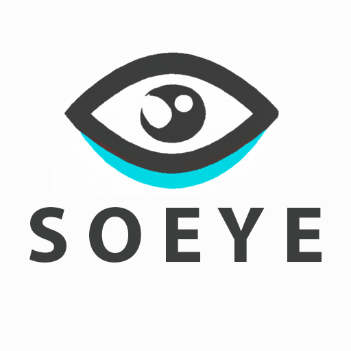

SoEye - About

SoEye is a social media forensics tool. It supports the investigation of Reddit and Twitter. It was developed as group project for CSS453 - Cyber Crimes and Digital Forensics in the first semester of the academic year 2022 at Sirindhorn International Institute of Technology (SIIT), Thammasat University.
Team members:
- Annu Maria Keranen (6522808202)
- Levin Kaus (6522808210)
- Michiel Thiers (6522808160)
- Miguel Donas-Botto (6522808327)